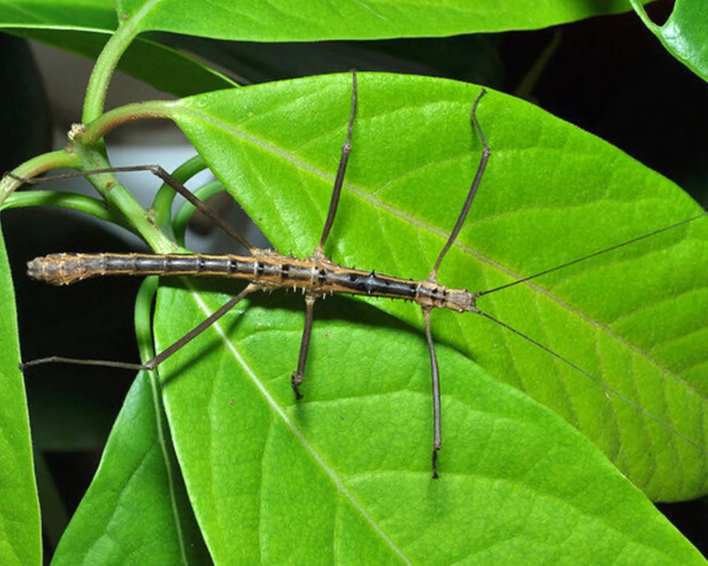

INSECTO PALO DE VIETNAM
Medauroidea extradentata

Utiliza su apariencia para integrarse con el entorno y pasar desapercibido ante los depredadores.
- Nombre científico: Medauroidea extradentata
- Mimetismo: Su apariencia le permite integrarse con el entorno y pasar desapercibido ante los depredadores.
- Hábitat: Bosques tropicales y subtropicales de Vietnam.
- Sentido: Visión.
- Uso: Supervivencia.
- Función: Ocultamiento.